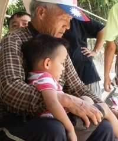
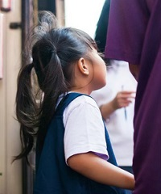
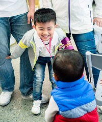
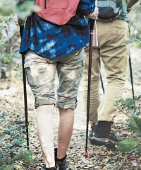
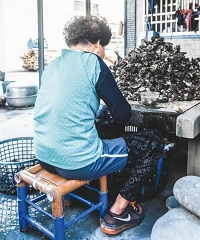
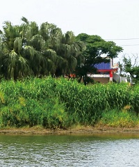

角落故事
一個半小時的上學路 「小啟長大以後想做什麼呢？」喜歡羽球、桌球和美術的小啟，彷彿看到了爺爺奶奶辛苦工作籌措學費的模樣，不禁搖了搖頭，「嗯……還是務農吧。」他說自己之所以能到學校去上課，都是奶奶和繼任爺爺做臨時工賣高麗菜，還有用老人年金換來的，他已經比那些沒辦法讀書的小朋友幸運太多了。
閱讀全文 我能給你的只有愛 小思的奶奶年紀大了，就算是已經做習慣了的剝蚵工作也越來越吃力，媽媽因為患有智能障礙，在本來就缺乏工作機會的村子裡，更是一份工作也找不到。「媽媽和奶奶能不能等等我呢？我想要快點長大，給你們買好多好多的雞蛋吃，所以……在我長大之前，你們不要去太遠的地方，不要丟下我一個人，好不好？」
閱讀全文 發現愛，超越極限 健康每況愈下的劉奶奶，每天一早便開始忙進忙出，張羅一家十幾口的早餐，將成堆的衣物洗完已經過了中午，才剛扒幾口飯，馬上又要上工，因為一家子的生計全靠她一人做手工支應。「孫子說，他想要打棒球……」奶奶停頓了一下，忽然紅了眼眶，「但其實我知道，他喜歡讀書……只是……我們付不起學費……」
閱讀全文地方故事
守護山林與山友的勇士 高山協作員是高山上的「響導」和「揹工」，從清代開山撫番時期至今，引領登山者探索山林、尋找水源及建設營地。協作員大多由原住民擔任，從事高風險、低保障的工作，沒有勞保、沒有意外險，日復一日面對嚴峻的考驗，卻依舊樂觀開朗，只因為－－他們是勇士，守護山林與山友的勇士。
閱讀全文 刻出歲月．蚵出文化 當地居民很多都以處理蚵殼為收入來源，一籃又一籃的蚵．處理起來可不容易，看著他們熟練的手法，以及他們手上的繭，是歲月、是歷練，是努力地過日子。就是這樣養活一家人，刀起刀落，剝著剝著也就一輩子了。為了溫飽依靠海洋與天氣，海風在臉上刻下深刻的紋路，襯托出臉孔主人不屈不撓的精神。
閱讀全文 工農爭地．誰得利？ 稻田的色彩從飽滿稻穗的金黃色，被工業汙水染成灰黑色，農地種不出作物，溪河裡的魚蝦滅絕殆盡。無良田可耕，農夫出走另謀生路，整村的人們收拾著家當，找尋下一個落腳處。受傷的土地進入加護病房觀察列管，環保署結合專家做土壤調查，制定法案，祭出汙染土壤整治措施，來替受傷的土地療傷。
閱讀全文